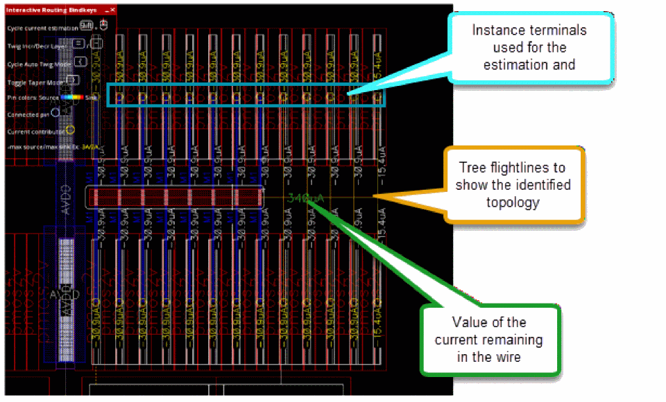
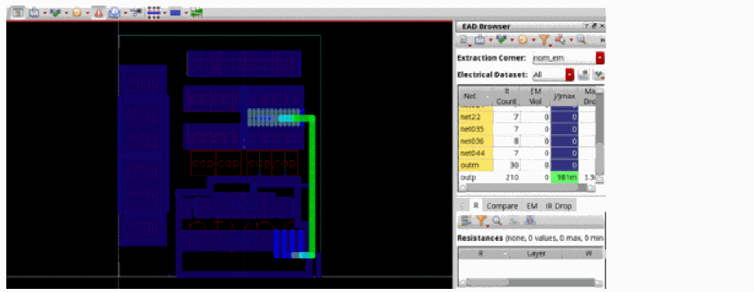

Running Interactive SDR Current Density Checks
Based on the simulation results, Create Wire estimates the current in the edited wire and vias according to the EAD settings, such as dataset, temperature, and current scaling. The current density check lets you create a design with the appropriate width of the wire based on the estimated EM value.
To run the current density check:
- Select a net in the Navigator assistant or the EAD browser.
-
Select
Metal2as the active layer in the Palette. -
To control the wire size and the number of strands compared to the estimated width required to avoid EM violations, specify a value in the Width Multiplier text box on the SDR toolbar. For example, if you specify the width multiplier as 2.0, it means that the stranded width is multiplied by 2 compared to the estimated width to reach 100% of EM. Either the width of each strand is increased or the number of strands are increased.
Environment variable: weSdrWidthMultiplier -
Start to create a wire or a stranded wire from the selected pin or instance.
-
Choose Create – Wiring – Wire or press
P. -
Choose Create – Wiring – Create Stranded Wire or press
Ctrl + Shift + S.
When you start the Create Wire or the Create Stranded Wire command, the wires and vias interactively connect the pins and automatically estimates the current between the two pins.
Based on the estimated current, the wire width and number of via cuts are automatically resized so that the estimated current of the wire is below the value of the final current of the wire. -
Choose Create – Wiring – Wire or press
-
Select a checker mode from the Checker Mode drop-down list. You can select one of the following checker modes: Checker Mode: Enforce, Checker Mode: Notify, and Checker Mode: Off.
Environment variable: weSdrCheckMode - To control the current estimation of wire, select a current estimation mode. You can select one of the following current estimation mode: Auto, Sum Connected Pins Current, Maintain Constant Current, and Nearest Island Current.
-
To complete interactive routing, press
Enter. - Run EM checks as follows.
-
To display the EM violations, click Highlight EM violations button on EM tab of the Details pane of EAD Browser.
This completes simulation-driven routing and EM checks for the design.

Related Topics
Connecting Twigs Automatically
Return to top